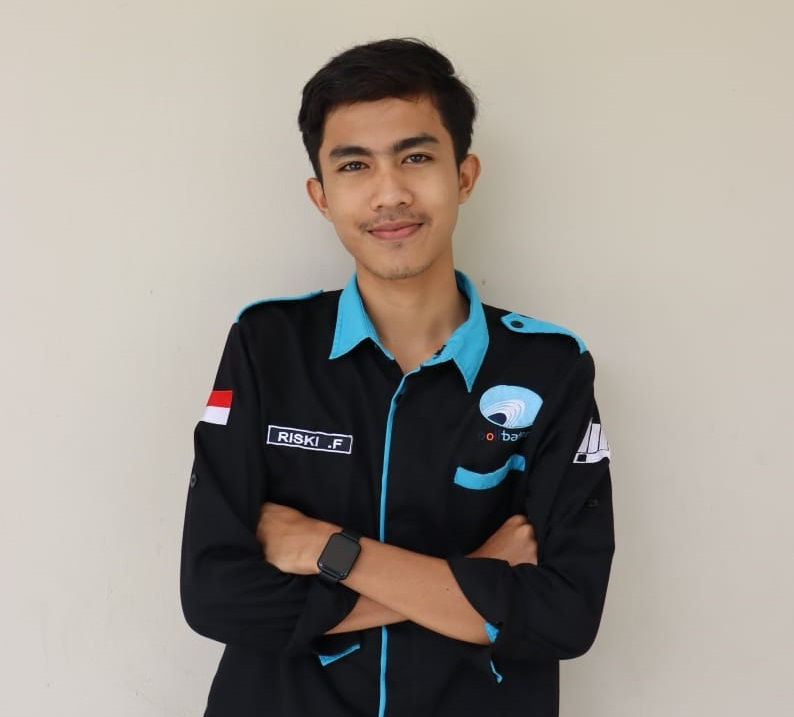
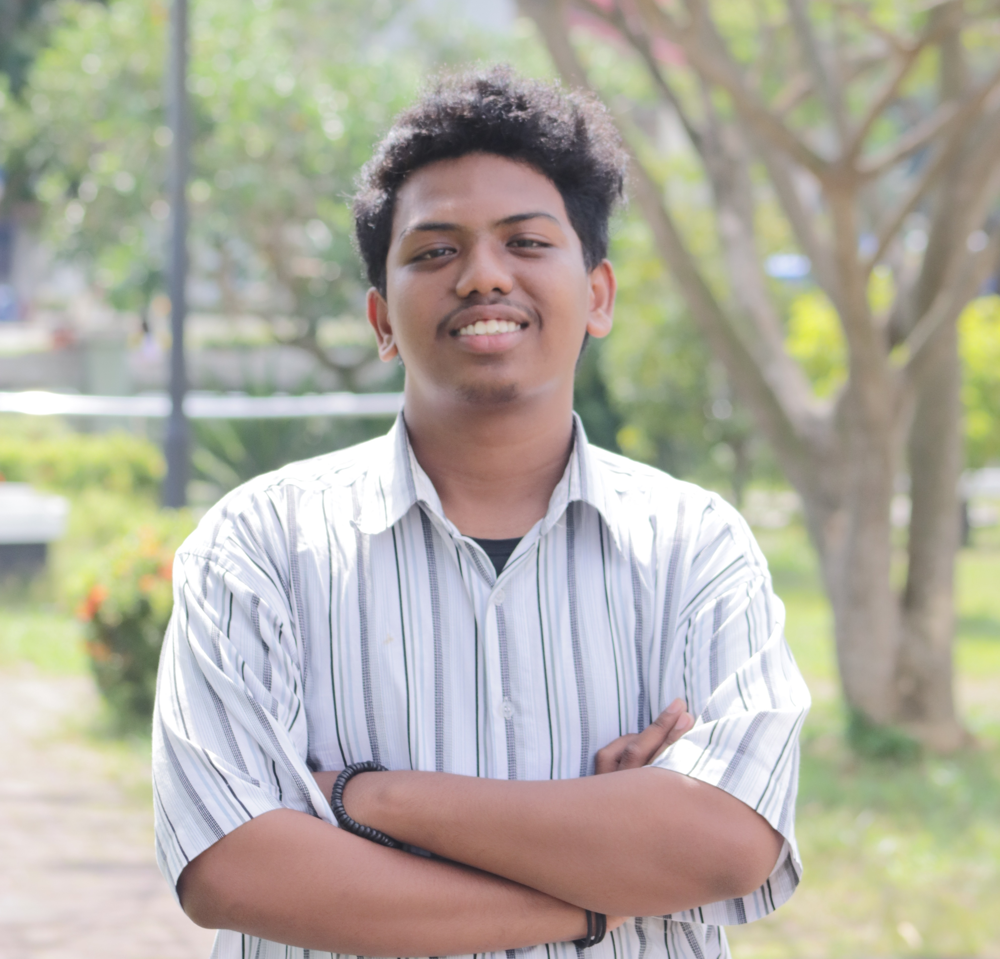
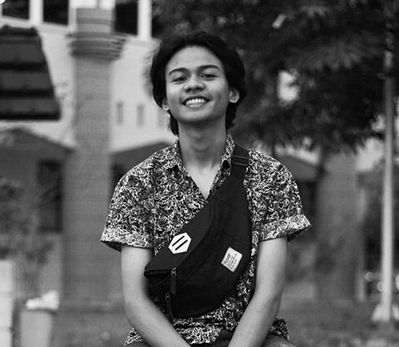

Tentang
Tentang
Tentang Aplikasi Suarakala
Aplikasi ini dibuat dengan tujuan untuk menuntaskan UAS dari mata kuliah Pemrograman Perangkat Bergerak.
Aplikasi ini dibuat secara kelompok. Dimana kelompok tersebut terdiri dari Rizki Fadillah, Dwiky Saputra dan Reynaldi Cakra Milianto Djabar
Anggota

Rizki Fadillah
NIM: 4311801006

Dwiky Saputra
NIM: 4311801009

Reynaldi Cakra Milianto Djabar
NIM: 4311801028